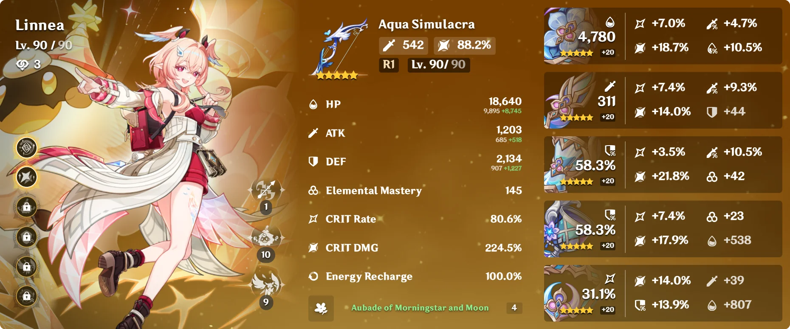
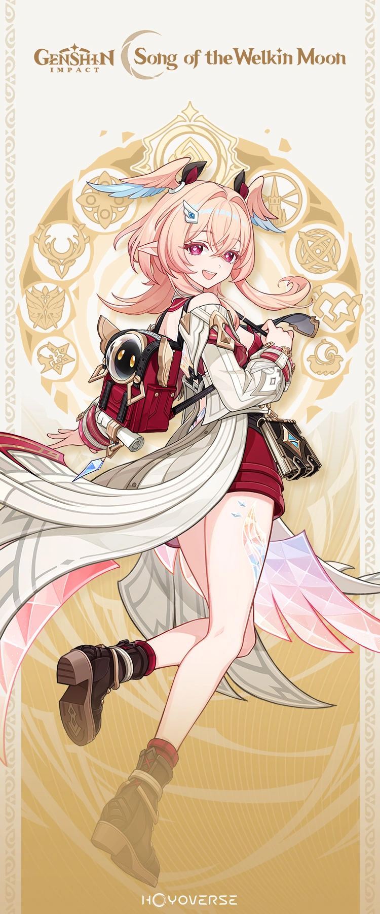

Linnea's Build

Linnea is the new 5 star lunar-crystalize healer, support, sub-dps and dps! She is very flexible and you can use her as you please! She is really a must pull. Her skill can heal, boost dmg and spread EM across the whole team all at once! She also doesn't take much to build to be super reliable to the team. Her ultimate also heals the whole entire team without them needing to be out.

Main Affixes:
- CRIT DMG
- CRIT RATE
- DEF%
- ER/EM (as needed)
Best Weapons
Finding the right weapon for Linnea can be a challenge, especially if you don't have enough primos to pull for her weapon! Sometimes even past character's weapons can also do the trick. Finding the right affix for the weapon can also be overwhelming, especially trying to figure out what the description of it means. Finding the right weapon is also different for each player depending on what you lack in artifacts. Some people may need more CRIT RATE, CRIT DMG, ATK% or even ER in some cases. Here's a list of her top 4 weapons:
- Golden Frostbound Oath
- Aqua Simulacra
- Polar Star
- Slingshot
What Are more Weapons?
- The Stringless
- Favonius Warbow
More information about Linnea's build can be found below:
Linnea's Build